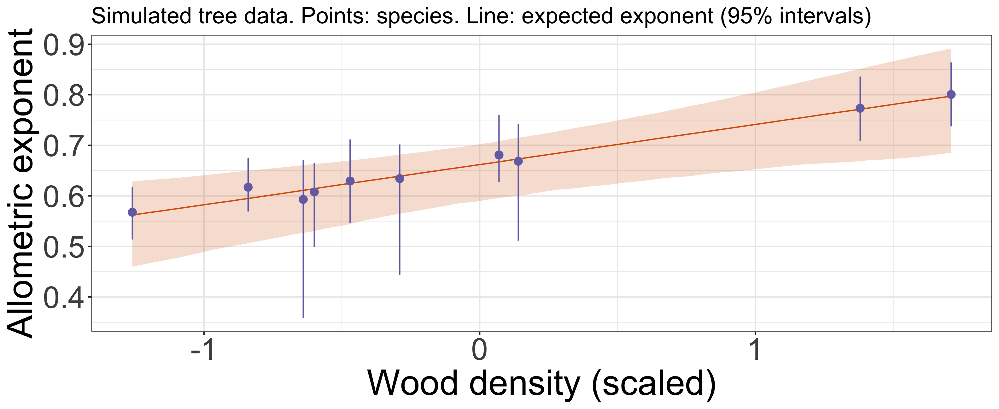

Bayesian statistics for ecology
Day 3: Mother trees and information sharing
AFEC-X 2026 · 23 October
Masatoshi Katabuchi @ XTBG, CAS
Survival, density and group differences
Day 1: uncertainty about a survival probability.
Day 2: survival probability changes with conspecific density.
Today: mother trees and species can differ while sharing information.
We first leave out the density predictor and use a separate data set to make the idea of information sharing easier to see. We return to species CNDD later.
Today’s objectives
Explain complete pooling, separate estimation and partial pooling using a figure.
Explain why some estimates respond more to shared information.
Describe where information sharing could help in your own research.
Eight mother trees
A
41
9
B
45
18
C
32
6
D
18
5
E
33
8
F
26
8
G
46
11
H
16
8
We followed seedlings under eight mother trees of one species.
What survival probability would you report for each mother tree?
Would a hypothetical 0/2 or 2/2 justify complete certainty about survival?
These are simulated mother-tree data, different from Day 2’s quadrats. The 0/2 and 2/2 counts are hypothetical questions, not rows of this table. Focus on n and survivors. Hide p_true until after interpretation.
Separate observed proportions
Which differences could reflect sampling variation?
10-25 minutes. These are observed proportions, equal to separate binomial MLEs. The posterior comparison later uses means with explicitly stated priors.
Complete pooling
s_j\sim\operatorname{Binomial}(n_j,p)
Every mother tree shares the same p .
What ecological difference does this assumption leave out?
j indexes mother trees. Our comparison uses p ~ Beta(1,1), the flat Day 1 prior. An uncertainty interval for a common p does not represent between-tree variation.
Separate estimation
s_j\sim\operatorname{Binomial}(n_j,p_j)
Each mother tree has its own independent p_j .
How much can a tree with few seedlings tell us on its own?
Our comparison uses independent Beta(1,1) priors. What we learn about tree A does not update the probability for tree B. Small data can give wide intervals.
The group variation matters
Greater inferred variation generally allows less sharing among mother trees.
This illustration fixes mu=0 and changes sigma. It uses fixed Normal quantiles and shows probabilities, not a density transformed without a Jacobian. These hypothetical values are not the fitted rates of our trees.
The completed model and its assumptions
Selected lines from stan/logistic.stan:
0 , 5 );// sigma is constrained to be positive // For every mother tree i: Data: seedlings and survivors. Unknowns: tree effects, group centre and group SD.
These lines come from stan/logistic.stan, shown together for reading. z is a transformed parameter and sigma has lower bound zero. Read the complete file in the handout. No independent coding or non-centred parameterisation lesson. Priors: mu Normal(0,5), sigma half-Normal(0,1). z_tilde is standard Normal.
Which estimates might move?
A
41
9
0.22
B
45
18
0.40
C
32
6
0.19
D
18
5
0.28
E
33
8
0.24
F
26
8
0.31
G
46
11
0.24
H
16
8
0.50
Choose two mother trees and explain your prediction to your partner.
Begin the 40-55 minute exercise. Display only observed data before revealing fitted comparisons. Participants can write predictions on paper.
Three ways of estimating survival
Points: posterior means. Bars: 90% intervals.
Complete and separate models use Beta(1,1) probability priors, whereas partial pooling uses the Normal logit group prior with estimated centre and SD. State this difference. It is an illustrative model comparison, not an isolation of pooling under identical marginal priors. All code and priors are in the handout.
Why estimates move by different amounts
Consider information within a tree, its position in the group distribution, and inferred group variation.
Debrief. Avoid saying every estimate moves to the pooled proportion or has a narrower interval. Shrinkage depends on assumptions and data. It cannot guarantee smaller estimation error for each group.
Species differences in CNDD
Day 2’s common curve becomes a set of species curves. How could rare species borrow information?
55-65 minutes. This is the seeded conceptual example from main.qmd, not fitted species effects for Day 2’s data or a numerical reproduction of either paper. Mother trees and species are different groups. Individual predictors may also differ.
Individual and species questions
Individual level: how does survival vary with conspecific density?
\operatorname{logit}(p_{ij})=\alpha_j+\beta_j x_{ij}
Species level: do density coefficients vary with species abundance?
\beta_j\sim\mathcal{N}(\gamma_0+\gamma_1 a_j,\tau)
i indexes seedlings and j species here. The response is Bernoulli per seedling, or binomial when counts share the same predictors. a_j is scaled species abundance. The group SD tau and all coefficients require priors in a full analysis. These equations explain structure. They are not another implementation exercise.
A species-level relationship
What would this relationship imply about species differences?
Simulated coefficients, with the generating line shown. Higher coefficients here mean less negative slopes. A logit coefficient is not a fixed probability difference, which also depends on baseline survival and the densities compared. The model asks about an association. It alone does not establish the cause of rarity.
Allometry and wood density
Individual level: DBH predicts height.
Species level: wood density may predict the allometric exponent.
h=a\,\mathrm{DBH}^{b}
65-70 minutes: optional second research connection, 5 minutes total for two slides. The data are simulated. Explain the power-law shape visually, without a new transformation or coefficient exercise. Inspiration follows main.qmd’s research example; its unpublished citation status has not been independently established.
The same structure with a different response

The response changes to log height. Species still share information through a group model.
The figure uses day3_vslope, fitted to the existing simulated allometry data. Points summarise species exponents and the line summarises their expected value at each wood density, with 90% intervals. It is not evidence from a real forest. Skip these two slides if delayed. Detailed transformation and implementation are optional.
Computation and observations both matter
Does the model reproduce survival counts by mother tree?
70-80 minutes. First inspect stored R-hat, bulk/tail ESS, traces, divergences, treedepth and E-BFMI in the result sheet. Then discuss this predictive check. Draws use observed n_j and posterior p_j. A good fit is one part of assessment.
Your own research
Name a grouping and a quantity that may vary among its groups.
What would justify sharing information, and what predicted pattern would you check?
80-85 minutes: pairs explain one application in words. Ask two pairs to share. This is reflection rather than another code exercise. Keep 85-90 for questions.
Three days of Bayesian thinking
A posterior expresses uncertainty conditional on data and assumptions.
Predictions put that uncertainty on the scale of an ecological question.
Hierarchical priors share information while allowing groups to differ.
Computation, model-generated data and ecological context all inform interpretation.
A new mother tree
set.seed (20261026 )<- fit$ draws<- plogis (rnorm (nrow (draws),draws$ mu,draws$ sigma))quantile (p_new,c (.05 ,.5 ,.95 ))
This predicts a new tree’s probability, including group variation. A future survivor count would also require a seedling count and binomial sampling.